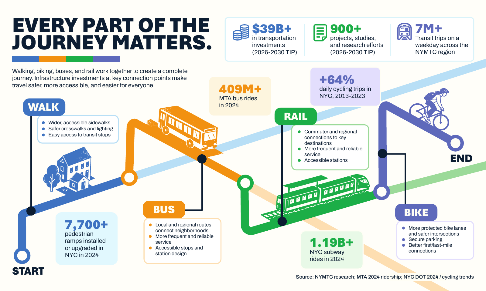
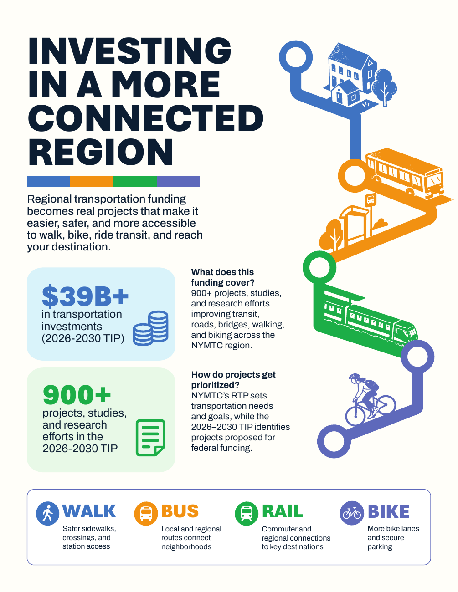
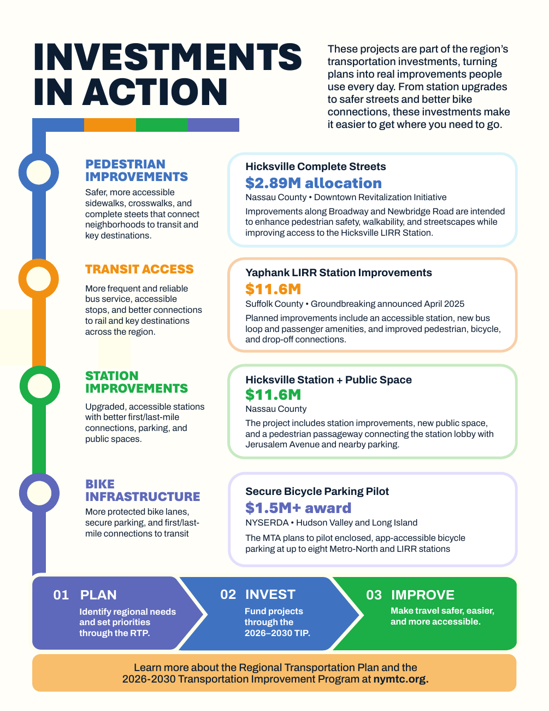
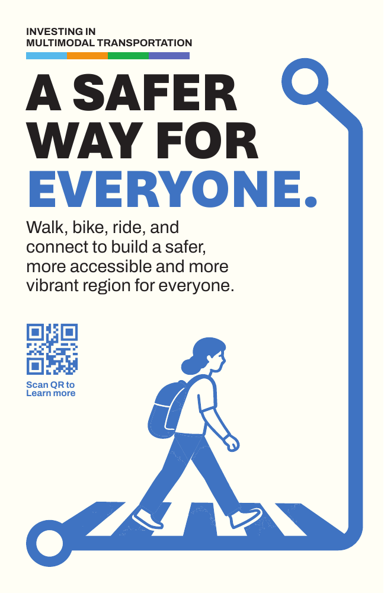
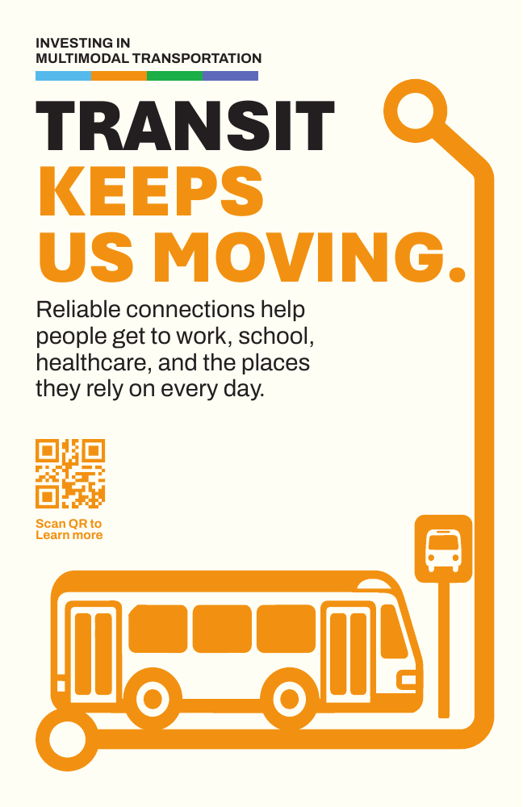
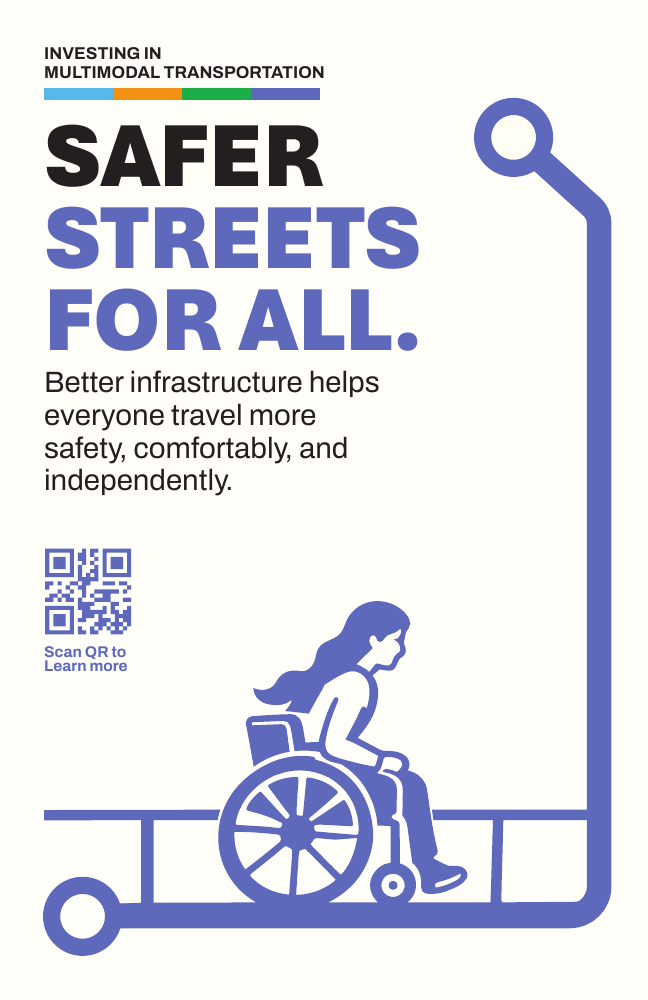
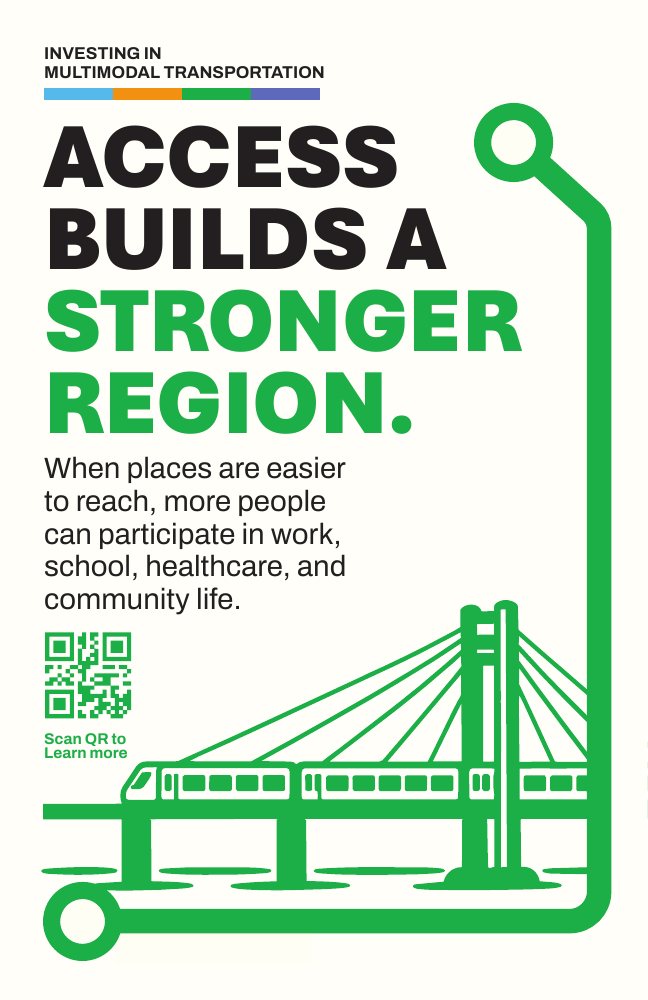

Every part of the journey matters.
A walk to the bus. A transfer to rail. A bike ride for the last stretch. Different ways of traveling can be parts of one connected journey.
This proposed campaign explores how investments in walking, biking, buses, and rail can make everyday connections safer, more accessible, and easier to navigate.
Independent capstone concept by Yuting Lin. Presented for educational purposes; this is not an official NYMTC website.

One journey. Connected at every step.
A trip is more than one mode. Select a stage to discover how infrastructure helps people move from one part of their journey to the next.
Illustrative journey, not a mapped route or trip planner. You may use a different combination of modes.
View the original journey infographic
Statistics in the original artwork retain their stated periods and geographic scope; they are not live counters.
From regional plans to everyday connections.
A safer crossing, an accessible station approach, or secure bicycle parking can help connect a neighborhood to the wider transportation network.
NYC journeys connect to a larger region. The campaign fact sheet highlights regional investments and examples from Long Island and the Hudson Valley alongside the needs of people walking, cycling, and using transit.

Investments in action
Walking: The fact sheet highlights Hicksville Complete Streets improvements intended to support pedestrian safety, walkability, and access to the LIRR station.
Transit access: Its Yaphank station example describes planned accessible facilities and improved bus, pedestrian, bicycle, and drop-off connections.
Station connections: Hicksville station and public-space improvements illustrate how access around a station is part of the journey.
Cycling: A secure bicycle parking pilot illustrates how bike storage can support first- and last-mile connections to commuter rail.
These are regional examples from the supplied fact sheet, not NYC project locations. Planned benefits are not measured results. Funding figures and project status in the supplied artwork need a source check before public launch.
View the investments-in-action page

Different modes. A shared message.
Better connections are about the places and people we reach. These four campaign posters bring that message into everyday travel spaces.

Walk, bike, ride, and connect to build a safer, more accessible, and more vibrant region for everyone.

Reliable connections help people get to work, school, healthcare, and the places they rely on every day.

Better infrastructure helps everyone travel more safely, comfortably, and independently.

When places are easier to reach, more people can participate in work, school, healthcare, and community life.
Original poster artwork. For the final website, replace “Scan QR” with a direct link or ensure each QR destination is verified.
See what’s being planned. Explore what’s being invested.
Connect the campaign to the regional planning behind it. Visit NYMTC’s official resources to read more about transportation priorities, investments, and projects.
Explore Moving Forward 2055 ↗ Read the Regional Transportation Plan and its supporting materials, including regional project and study information. Explore the Transportation Improvement Program ↗ Learn about the TIP and follow NYMTC’s links to project information, maps, and investment data.These links open official NYMTC resources in a new tab. This campaign is a student proposal and does not represent an agency announcement.
Let’s talk about the connections.
Where does your journey work well—and where is a connection missing?
Join a proposed online conversation about walking, biking, buses, and rail. Explore the campaign’s journey graphic, learn how to find regional investment information, and discuss what makes a transfer safer and easier.
Every Connection Counts
A community introduction to multimodal journeys.
Proposed format: 45-minute online session
Date and meeting link: To be confirmed
Suggested agenda: Campaign introduction, interactive journey walkthrough, NYMTC resource tour, and community questions.
Demonstration only. No event is scheduled, and no registration or personal information is sent.
Keep the whole journey in view.
Read, save, or share the campaign materials. Each PDF brings a different part of the same story into focus: how investments can help transportation modes work together.
PDF · Original supplied file Journey infographic ↓A static version of the campaign’s connected journey.
PDF · Original supplied file Outreach poster series ↓Four campaign messages in the supplied poster document.
PDF · Original supplied file
The research brief also proposes a social media series; no separate social media asset was supplied.
Review the extracted design system and wireframe recommendations
Built from your campaign
#4076C5
#F59300
#17B143
#6165BE
#0C1D32
#FFFEF9
Typography: Aptos Black for bold uppercase campaign headlines; Archivo SemiBold for body text and labels. The supplied PDFs confirm these font names. This prototype uses local fonts when available, with Arial fallbacks; licensed web font files are needed to reproduce the typography exactly.
Graphic language: Continuous angular routes, hollow circular interchange nodes, transport pictograms, lightly textured illustrations, a four-color strip, and rounded information panels. Preserve the original illustrations rather than substituting unrelated icons.
Proposed web rules: 1,152px content area; 24px mobile gutters; 8px spacing rhythm; 44px minimum controls; 16–18px body copy; responsive two-column storytelling; visible keyboard focus. Use dark navy for small text; mode colors identify categories alongside written labels.
Interaction: One persistent navigation bar with section anchors. Clickable journey stages reveal connection needs. Static PDFs live in the final resource library; the infographic has a small inline download link. Original graphics stay visible throughout.
Final infographic direction: Rebuild the original route as responsive vector artwork using the same supplied transport graphics. Anchor the four buttons to its connection nodes. Keep this wireframe’s text panel below the route and use a vertical version on phones.
Scope: This is an interactive structure-and-copy proposal, not a finished visual design. No live routing data, registration service, or agency affiliation is implied.